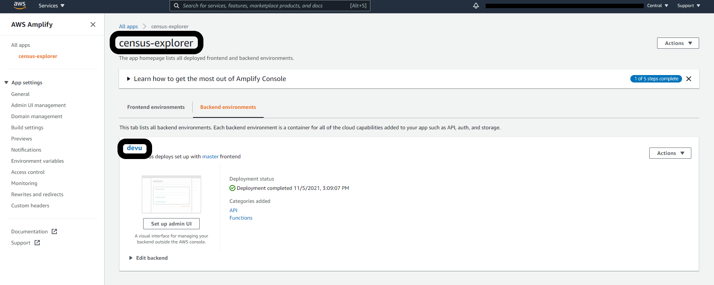
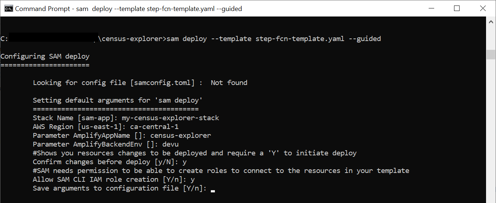
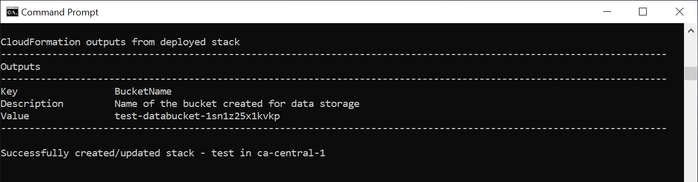
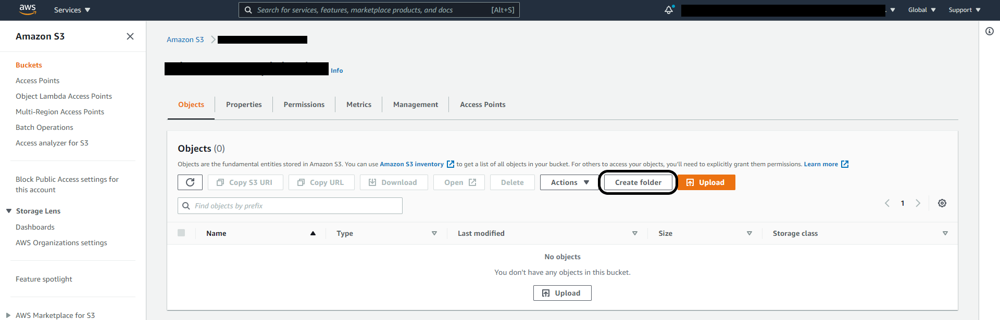
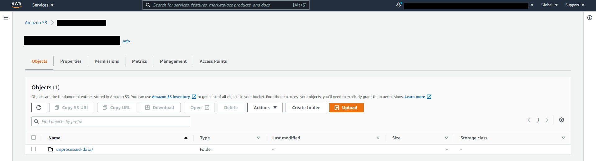
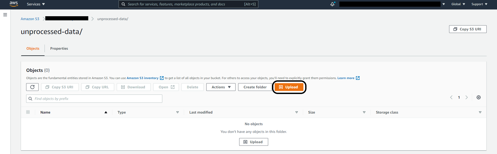
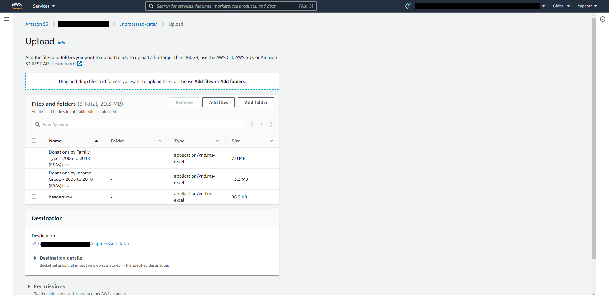
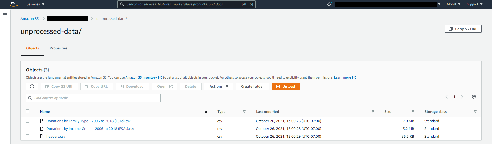

Backend Deployment
Backend/Data Preparation Deployment
Step 1: Clone this repository
Step 2: Deploy CloudFormation template
In a terminal in the project root directory, enter the following command. This will guide you through the deployment process. The CloudFormation template will create a Step Function and the Lambda functions it triggers to fetch and prepare the census and T1 data.
Parameter details:
- Stack Name: An identifier for your stack.
- AWS Region: The region where the solution will be deployed.
- AmplifyAppName: The name of the Amplify app created previously.
- AmplifyBackendEnv: The name of the Amplify backend environment of the app created previously.
To find AmplifyAppName and AmplifyBackendEnv, go to the Amplify console, and click on the app you created during frontend deployment. In the example provided below, the app is called "census-explorer", and the backend environment is called "devu"

sam deploy --template step-fcn-template.yaml --guide

Note: Make sure this step completes successfully before moving on to the next step.
- When the deployment is complete, a parameter with the key BucketName will be output. This is the bucket you will be uploading data to in the future, so remember the name

Step 3: Upload files for data preparation
1. Log in to the S3 management console.
2. ** Select the bucket created by the CloudFormation template in step 2.2. Click Create folder, and name it "unprocessed-data".**


3. Select the new unprocessed-data folder. Click Upload, and add the "headers.csv", "Donations by Family Type - 2006 to 2018 (FSAs).csv", and "Donations by Income Group - 2006 to 2018 (FSAs).csv" files from the data directory of this repository



Note: Make sure the files finish uploading before moving on to the next step.
Step 4: Trigger data preparation Step Function
- Log in to the Lambda management console. Select Step Functions state machines from the menu on the left.
- Select the state machine - the name should start with "DataProcessingStateMachine-".
- Click Execute. Leave all settings at default.
Once the state machine finishes executing successfully, backend deployment and data preparation is complete!